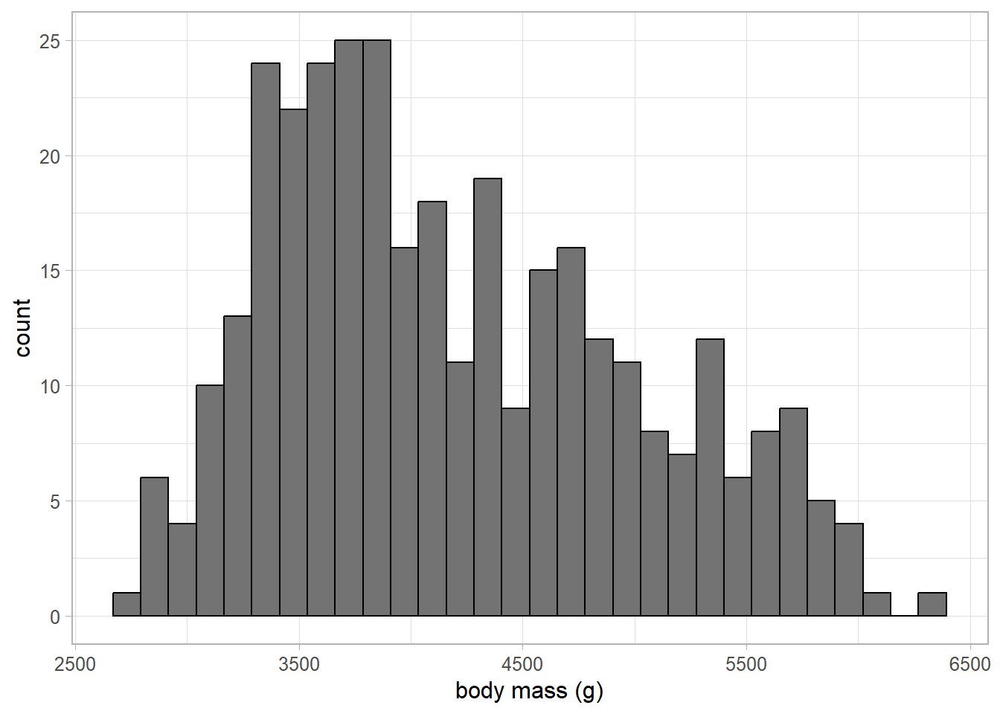
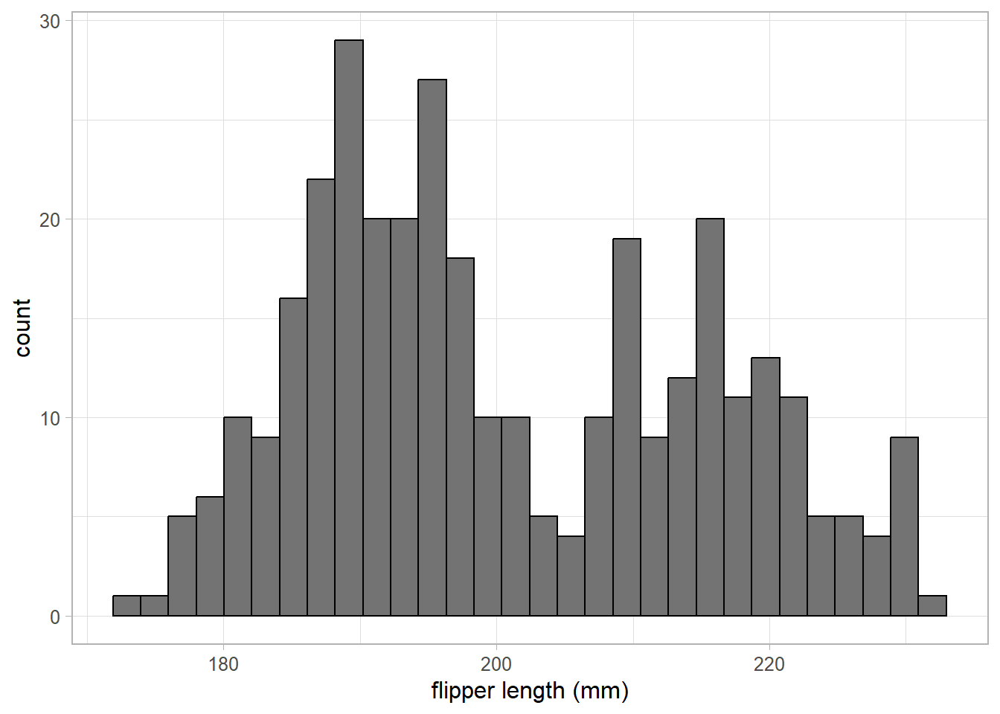
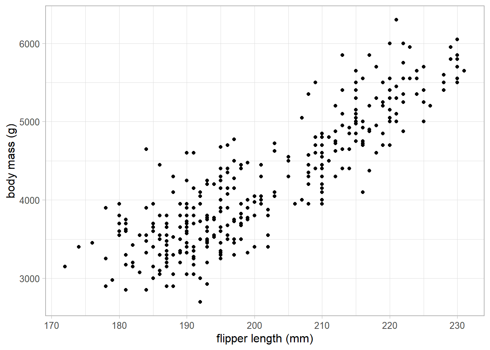

install.packages("palmerpenguin")2 Preparing for linear regression
2.1 Why regression?
As with any other type of statistical analysis, we must always keep in mind the reason for carrying it out. Research questions are an often overlooked but fundamental part of any analysis plan, and should be fully defined before we carry out any analysis, or even collect any data!
Note
Research questions should be clear, concise and answerable! For a more detailed introduction to research question generation, including the PICO approach and worked examples, check out these notes.
Throughout most of this course, we will be trying to answer questions about penguins in the Palmer Archipelago, Antarctica. Our research question for this course will be:
Is body mass of penguins in the Palmer Archipelago related to their flipper size?
2.2 Loading the data
From our research question, we know that we require data about penguins in the Palmer Archipelago in Antarctica, and that this data must contain information about their body mass and flipper size. This data can be loaded into R using the palmerpenguins package. More information about the data and its collection can be found on the package website or the original publication.

To load in this data, we must first load the palmerpenguin package. If this is your first time using this package (or you have not used it in a very long time), you will need to download this from the online CRAN repository of R packages using the following code:
Warning
The install.packages command requires an internet connection and, for some larger packages, can take some time.
The good news is that package installation is only required the first time a package is used on a machine or to update the package version following a substantial change.
If you have already used the palmerpenguin package or have downloaded it in the past, you can load the package and data into our current session of R using the following:
library(palmerpenguins)
data(penguins)- 1
- Load the package into the current session of R.
- 2
- Load the penguin data from this package to our environment.
When loading any data into R, we must run some checks to ensure it has been read in correctly. This includes checking all variables we expect are present, variable names are in a tidy format, and that variables have been recognised as the correct type.
Style tip
Variable names should contain only lower case letters, numbers and underscores _. They should be clear and descriptive. If you are reading data from a particularly messy source, the janitor R package contains the clean_names function that converts existing variable names into a ‘tidy’ alternative.
View(penguins)
names(penguins)
str(penguins)- 1
- Preview the dataset in RStudio.
- 2
- Return variable names.
- 3
- Display the structure of the data, including the object type, variable types, and a preview of each variable.
[1] "species" "island" "bill_length_mm"
[4] "bill_depth_mm" "flipper_length_mm" "body_mass_g"
[7] "sex" "year"
tibble [344 × 8] (S3: tbl_df/tbl/data.frame)
$ species : Factor w/ 3 levels "Adelie","Chinstrap",..: 1 1 1 1 1 1 1 1 1 1 ...
$ island : Factor w/ 3 levels "Biscoe","Dream",..: 3 3 3 3 3 3 3 3 3 3 ...
$ bill_length_mm : num [1:344] 39.1 39.5 40.3 NA 36.7 39.3 38.9 39.2 34.1 42 ...
$ bill_depth_mm : num [1:344] 18.7 17.4 18 NA 19.3 20.6 17.8 19.6 18.1 20.2 ...
$ flipper_length_mm: int [1:344] 181 186 195 NA 193 190 181 195 193 190 ...
$ body_mass_g : int [1:344] 3750 3800 3250 NA 3450 3650 3625 4675 3475 4250 ...
$ sex : Factor w/ 2 levels "female","male": 2 1 1 NA 1 2 1 2 NA NA ...
$ year : int [1:344] 2007 2007 2007 2007 2007 2007 2007 2007 2007 2007 ...The penguins dataset contains observations made on 344 penguins. There are 8 variables in the data, including body mass and flipper length, which would need to be included in our final model to answer our research question.
The data consists of a mixture of numeric, binary (sex) and nominal (species, island) variables which appear to be correctly specified within R.
Note
If the data contains ordered categorical variables, ensure they are recognised as factor with the correct order assigned. If this is not the case by default, correct this before proceeding, using the mutate function to add the converted variable and the factor function with levels defined in the correct order.
2.3 Exploring the data
When we are sure that the data have been read in correctly and tidied into a useable format, we can begin to explore the data. Data exploration can include
- Data visualisations, used to identify potential outliers, check variable distributions, etc.
- Summarising variables in the sample, to quantify aspects of the variables such as the center and spread (for numeric variables) or the distribution of observations between groups (for categorical variables)
- Quantifying bivariate relationships and differences between groups, using values such as abolute or relative differences, and correlation coefficients
Although data exploration will not allow us to answer the research question, it is a necessary step in the analysis process to build the best possible model. It allows us to identify potential issues that may arise before we encounter them.
2.3.1 Data visualisation
Data visualisation can be an effective method of exploring the data and generating hypotheses. In our example, we are interested in understanding the relationship between penguin’s body mass and flipper size. Therefore, it makes sense to begin by visualising these variables. As both variables are continuous, we can use a histogram to visualise them:
Warning
From this point on, we will be using the ggplot2 package which is part of tidyverse to generate visualisations. Make sure you have loaded the tidyverse package to your current session of R using code from the previous section.
ggplot(data = penguins) +
geom_histogram(aes(x = body_mass_g),
colour = "black", fill = "grey45") +
labs(x = "body mass (g)") +
theme_light(base_size = 12)
ggplot(data = penguins) +
geom_histogram(aes(x = flipper_length_mm),
colour = "black", fill = "grey45") +
labs(x = "flipper length (mm)") +
theme_light(base_size = 12) - 1
- Add a tidier label to the x-axis
- 2
- Change the default theme and ensure text is at least 12pt in size.


These histograms show that neither variable have any outliers of concern. The flipper length variable follows a bi-modal distribution, suggesting that there may be groupings in the data that may be important to explain differences in the sample. The outcome variable, body mass, follows a slightly positively skewed distribution.
Note
There is no requirement that our outcome must follow a normal distribution. A normal distribution is a naturally occurring distribution in many settings, this is why we often use this as a comparison.
We may also want to visualise the relationship between body mass and flipper length in our sample to generate a hypothesis regarding the answer to our research question. A scatterplot is an appropriate visualisation to investigate the relationship between two numeric variables:
ggplot(data = penguins) +
geom_point(aes(y = body_mass_g, x = flipper_length_mm)) +
labs(y = "body mass (g)", x = "flipper length (mm)") +
theme_light(base_size = 12)- 1
- The outcome variable should be displayed on the y-axis, the explanatory variable on the x-axis.

The scatterplot shows a strong, positive, linear relationship between body mass and flipper length: as flipper length increases, body mass tended to also increase.
Exercise 1
Using appropriate visualisations, investigate whether there are other variables that may explain differences in body mass. Consider whether any of these variables may be confounding the relationship between body mass and flipper length, and whether they should be included in the model.
Exercise hint
Consider changing the colour of points in Figure 2.3 to investigate whether the relationship between body mass and flipper length differs between species or sex.
Replace flipper length with other continuous variables to consider whether they may also contribute to differences in body mass.
Use facet_wrap to create plots facetted by categorical variables in the data to compare relationships without overlapping points.
If you are REALLY stuck, an example solution can be found here.
2.3.2 Summarising trends
Summary statistics are useful for quantifying different aspects of a sample. As they relate only to the sample, they cannot make inferences about a target population, nor can they answer our research question. They can be used in data exploration though to quantify trends between variables and differences between categories to generate hypotheses about how we may answer our research question.
We saw in Figure 2.3 that there was a strong, linear relationship between penguins’ body mass and flipper length. This relationship can be quantified using Pearson’s correlation coefficient, a measure of linear association between numeric variables.
Note
Correlation coefficients take values between -1 and 1, with 0 representing no association and positive/negative results representing positive/negative associations. The closer the result is to $$1, the stronger an association is.
cor(penguins$body_mass_g, penguins$flipper_length_mm,
use = "complete.obs")- 1
-
As there are missing values in the
penguinsdataset, we must specify the function use only complete observations to avoid anNAresult.
[1] 0.8712018As expected, there is a very strong, positive association between body mass and flipper length. Correlation coefficients can be presented with p-values to make inferences on a target population. However, they provide very little information about the nature of the relationship between variables, for example the magnitude of the relationship.
That is where linear regression comes in!